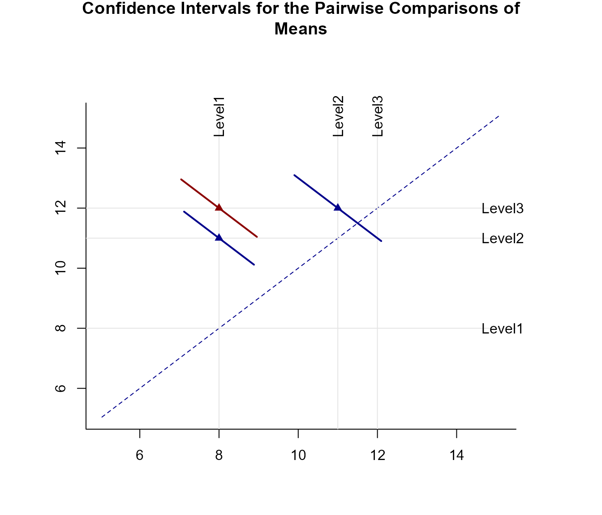
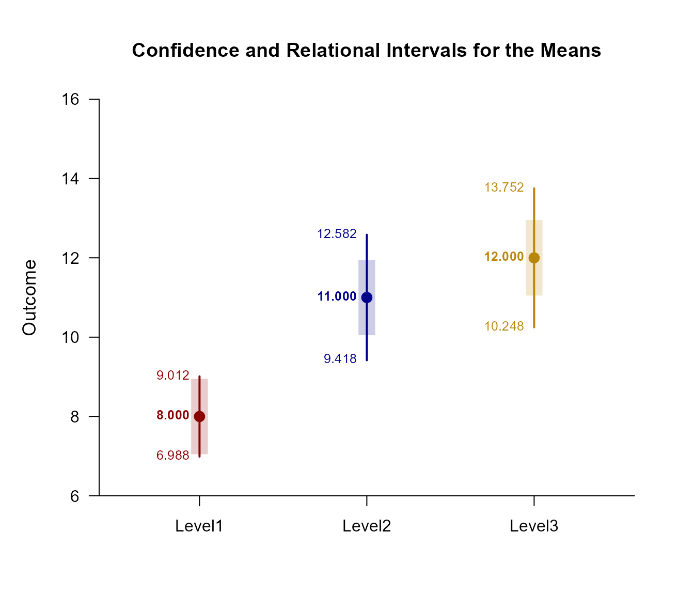

Pairwise OneWay Data Application
Source:vignettes/PairwiseOneWayDataApplication.Rmd
PairwiseOneWayDataApplication.RmdThis page examines unadjusted pairwise comparisons and Tukey post hoc comparisons with traditional confidence interval plots, relational interval plots, and diffograms using one-way (between-subjects) data.
Omnibus Analyses
Provide an ANOVA source table.
(Outcome ~ Factor) |> describeEffect()$`Source Table for the Model`
SS df MS
Between 86.667 2.000 43.333
Within 116.000 27.000 4.296
(Outcome ~ Factor) |> testEffect()$`Hypothesis Test for the Model`
F df1 df2 p
Factor 10.086 2.000 27.000 0.001Analyses of Pairwise Comparisons
The analyses for the pairwise comparisons do not assume homogeneity of variance and do not make adjustments for multiple comparisons (and are therefore effectively equivalent to a series of independent samples t tests).
Obtain tables of the interval estimates for the pairwise comparisons, tests of their statistical significance, and their standardized effect sizes.
(Outcome ~ Factor) |> estimatePairwise()$`Confidence Intervals for the Pairwise Comparisons of Means`
MD SE df LL UL
Level1 v Level2 3.000 0.830 15.308 1.234 4.766
Level1 v Level3 4.000 0.894 14.400 2.087 5.913
Level2 v Level3 1.000 1.043 17.815 -1.194 3.194
(Outcome ~ Factor) |> testPairwise()$`Hypothesis Tests for the Pairwise Comparisons of Means`
MD SE df t p
Level1 v Level2 3.000 0.830 15.308 3.614 0.002
Level1 v Level3 4.000 0.894 14.400 4.472 0.000
Level2 v Level3 1.000 1.043 17.815 0.958 0.351
(Outcome ~ Factor) |> standardizePairwise()$`Confidence Intervals for the Pairwise Standardized Comparisons of Means`
d SE LL UL
Level1 v Level2 1.616 0.555 0.529 2.703
Level1 v Level3 2.000 0.601 0.822 3.178
Level2 v Level3 0.429 0.477 -0.506 1.363Provide a traditional plot of the confidence intervals for the pairwise comparisons (including a line that represents no difference for the comparisons).
(Outcome ~ Factor) |> plotPairwise(line = 0, values = FALSE)Provide a diffogram (plot of means and the confidence intervals for the pairwise comparisons) and specify colors for intervals that do not include zero (darkblue) and those that do include zero (darkred).
(Outcome ~ Factor) |> plotPairwiseDiffogram(col = c("darkblue", "darkred"))
Analyses of Relational Intervals
The analyses for the relational confidence intervals do assume homogeneity of variance but do not make adjustments for multiple comparisons.
Provide estimates of the arelational and relational intervals.
(Outcome ~ Factor) |> estimateRelational()$`Confidence and Relational Intervals for the Means`
M RI.LL RI.UL CI.LL CI.UL
Level1 8.000 7.049 8.951 6.988 9.012
Level2 11.000 10.049 11.951 9.418 12.582
Level3 12.000 11.049 12.951 10.248 13.752Plot the intervals and enhance with color.
(Outcome ~ Factor) |> plotRelational(col = c("darkred", "darkblue", "darkgoldenrod"))
Analyses of Post Hoc Comparisons
The analyses for the post hoc comparisons do assume homogeneity of variance and do make adjustments for multiple comparisons (based on Tukey HSD procedures).
Obtain tables of the interval estimates for the posthoc comparisons, tests of their statistical significance, and their standardized effect sizes.
(Outcome ~ Factor) |> estimatePosthoc()$`Confidence Intervals for the Posthoc Comparisons of Means`
Diff SE df LL UL
Level1 v Level2 3.000 0.927 27.000 0.702 5.298
Level1 v Level3 4.000 0.927 27.000 1.702 6.298
Level2 v Level3 1.000 0.927 27.000 -1.298 3.298
(Outcome ~ Factor) |> testPairwise()$`Hypothesis Tests for the Pairwise Comparisons of Means`
MD SE df t p
Level1 v Level2 3.000 0.830 15.308 3.614 0.002
Level1 v Level3 4.000 0.894 14.400 4.472 0.000
Level2 v Level3 1.000 1.043 17.815 0.958 0.351
(Outcome ~ Factor) |> standardizePosthoc()$`Confidence Intervals for the Posthoc Standardized Comparisons of Means`
d SE LL UL
Level1 v Level2 1.616 0.555 0.529 2.703
Level1 v Level3 2.000 0.601 0.822 3.178
Level2 v Level3 0.429 0.477 -0.506 1.363Provide a traditional plot of the confidence intervals for the post hoc comparisons (including a line that represents no difference for the comparisons).
(Outcome ~ Factor) |> plotPosthoc(line = 0, values = FALSE)
Provide a diffogram (plot of means and the confidence intervals for the post hoc comparisons) and specify colors for intervals that do not include zero (darkblue) and those that do include zero (darkred).
(Outcome ~ Factor) |> plotPosthocDiffogram(col = c("darkblue", "darkred"))